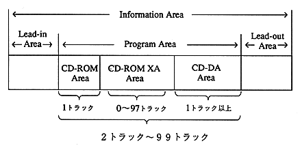

2. DISC physical format
This section describes the points that SEGA specifically limits within this standard. It also describes the matters necessary for developing an application.
2.1 Area division on disk and arrangement of each area
(1) Lead-in area (2) Program area (3) Lead-out areaTOC information is written in the lead-in area according to the “CD-ROM XA standard”.

Figure 2.1 Arrangement of each area on the disc
 | Only one track is required for the CD-ROM area (Mode 1). The CD-DA area must have at least one track. |